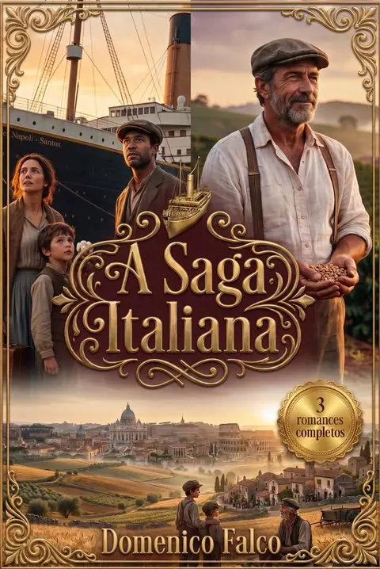
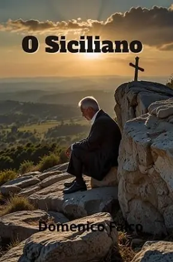
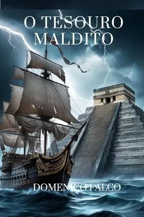
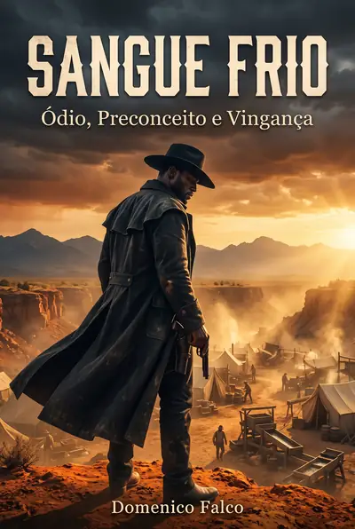
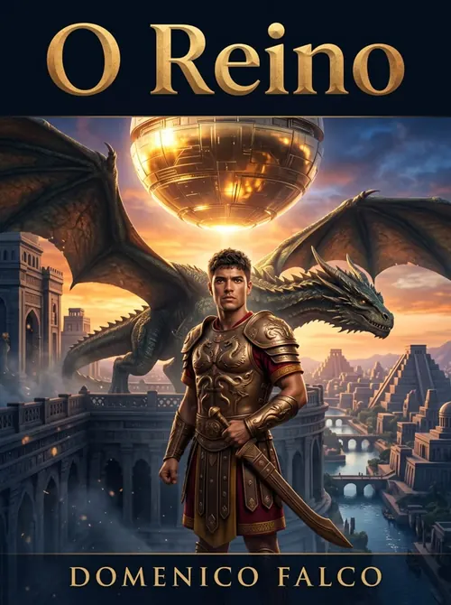
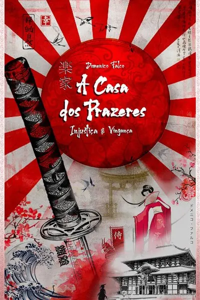
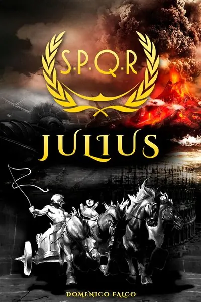
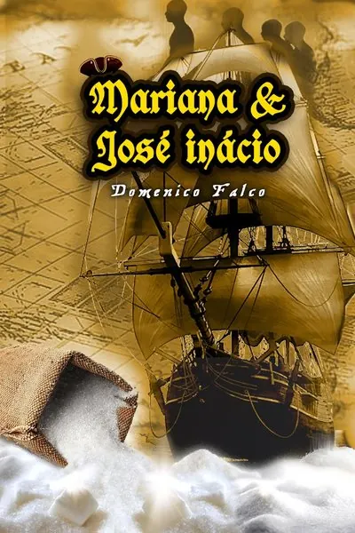
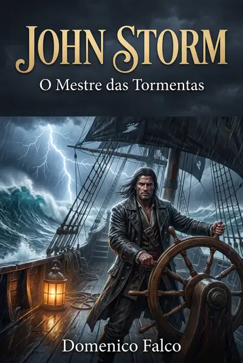
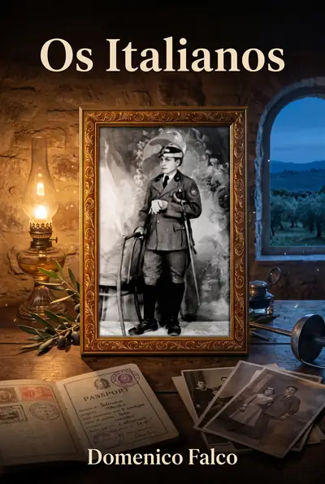

Rostos que Atravessam a História
Quinze protagonistas, cinco universos, um mesmo fio narrativo: pessoas comuns que se recusam a aceitar o destino que lhes foi dado.

Quem é a Dama da Noite? Na Paris de 1900, a calculista Joana dita as regras no Cabaré Vermelho. Acompanhe sua jornada de pura ambição e poder, cruzando da França ao Brasil!
Conhecer a obra
Nascido nas tormentas, ele desafiou impérios! Acompanhe o corsário John Storm em uma jornada épica por oceanos desconhecidos, amores intensos e vingança implacável.
Conhecer a obra
De prisioneira à mulher mais poderosa do Japão! Yoko transformou a submissão em uma arma letal de sedução e vingança. Até onde ela irá para destruir seus inimigos?
Conhecer a obra
Visionária e corajosa, Bela desafiou a elite cafeeira e a ditadura para defender o que acreditava. Uma mulher à frente do seu tempo que transformou a sociedade e o campo!
Conhecer a obra
Da Sicília aos cafezais do Brasil! Matteo fugiu da morte para construir um império com suor e sangue. Descubra até onde um homem pode ir para proteger o legado de sua família.
Conhecer a obra
Mãe, guerreira e o escudo de sua família. Na cruel realidade da favela, Kátia sacrificou tudo para proteger os filhos das garras do crime. Uma história de amor e resistência!
Conhecer a obra
O pilar inabalável de uma família grega despedaçada pela guerra. Athena enfrentou a fome, o luto e a ocupação nazista com uma coragem silenciosa. Um exemplo de força e amor!
Conhecer a obra
De herói da favela a magnata do crime. Joca cruzou a linha da moralidade em busca de poder e dinheiro, criando uma perigosa teia. Será que o topo vale a sua própria alma?
Conhecer a obra
Frio, calculista e o verdadeiro rei de Nova Iorque na Lei Seca. Dom Domenico controla a máfia com mãos de ferro e códigos implacáveis. Entre no submundo onde a traição é fatal!
Conhecer a obra
O letal espião britânico com licença para matar! Will mergulha no submundo de Hong Kong e na Guerra Fria para desmantelar conspirações e vingar o passado. O perigo é sua rotina!
Conhecer a obra
Um sobrevivente sem memória nas águas gélidas da Antártida. Ao lado de Luna, James enfrenta tribos canibais e os segredos mortais da Amazônia. Uma aventura de tirar o fôlego!
Conhecer a obra
De escravo africano a justiceiro implacável na Corrida do Ouro! Despojado de sua identidade, ele forjou seu destino com pólvora e sangue. A lenda do homem da capa preta!
Conhecer a obra
Um romano dividido entre o poder do Império e a mensagem de um homem chamado Yeshua. Acompanhe Julius em uma jornada épica de transformação espiritual, fé e pura redenção!
Conhecer a obra
Sob o capuz deste missionário, escondem-se segredos milenares, relíquias e ruínas de impérios. Até onde vai a devoção de um homem atormentado pelas sombras de seu próprio passado?
Conhecer a obra
Xamã e guardião dos mistérios da Amazônia! Com profunda sabedoria ancestral, Aruatam conecta o mundo físico aos espíritos implacáveis da floresta. Misticismo e sobrevivência!
Conhecer a obraArraste para ver mais →
As Obras
Trinta romances de ficção histórica, trinta mundos de romance histórico: piratas, samurais, jesuítas, cruzados e sobreviventes atravessando a história.

A Saga Italiana
Três romances completos da imigração italiana reunidos em um único volume, em ordem cronológica. Três famílias que nunca se cruzam, unidas pela mesma pergunta: ficar ou partir?
- Os Dois Irmãos Campânia, 1860 › os vinhedos de Mendoza
- O Siciliano Sicília, 1880 › os cafezais brasileiros
- Os Italianos Calábria, 1892 › Nova York e São Paulo
Edição especial com material inédito: prefácio do autor, linha do tempo do século e a comparação entre as três famílias. 417 páginas, 109 capítulos, por menos que o preço de dois romances avulsos.
Antes de ler: Imigração Italiana, a jornada do Mediterrâneo às Américas
O Comandante
Das ruínas da guerra ao topo do império marítimo global, a história de resiliência, perigos no mar e o verdadeiro custo do sucesso de um homem que reconstrói tudo a partir do nada.

O Siciliano
Obrigado a deixar a Sicília após uma disputa de terras, Matteo reconstrói sua vida como imigrante no Rio de Janeiro e em São Paulo, nas primeiras décadas do século XX.
Comprar na AmazonUm Lugar ao Sol
Cinco alunos de um instituto de artes cênicas em Nova Iorque atravessam as grandes transformações culturais das décadas de 1960 e 1970, incluindo a Guerra do Vietnã.
Comprar na AmazonA Vila
Numa aldeia de pescadores de sardinhas na Grécia do início do século XX, Athena, Andreas e seus quatro filhos vivem um drama familiar de amor, paixão e tragédia.
Comprar na AmazonAmor e Ódio
Entre a Guerra Civil Espanhola e a Segunda Guerra Mundial, um triângulo amoroso se transforma em traições e crimes passionais e políticos, revelando personalidades tão ambíguas quanto a própria guerra.
Comprar na AmazonOs Dois Irmãos
Na Campagna dos anos 1860, dois irmãos italianos atravessam provações que testam os laços de sangue, uma história densa e imprevisível sobre redenção e superação.
Comprar na AmazonA Indústria do Vício
Durante a Lei Seca americana, o capo Don Domenico e seu conselheiro Vince constroem um império à sombra da lei nas ruas de Nova Iorque e Atlantic City.
Comprar na AmazonO Asilo
Em um asilo nos arredores do Rio de Janeiro, em meados do século XX, moradores idosos e enfermos dividem histórias de vida, perda e companheirismo.
Comprar na Amazon
O Tesouro Maldito
No início do século XVI, o capitão Diego García rouba um tesouro asteca e foge amaldiçoado pelos mares do Caribe, enquanto uma criatura misteriosa começa a rondar seu navio.
Comprar na AmazonA Teia
Nascidos na mesma favela carioca, Joca se torna um criminoso poderoso e Helena, promotora pública decidida a desmontar seu império, até seus caminhos se cruzarem de novo.
Comprar na Amazon
Sangue Frio
O sofrimento e a luta de um homem escravizado desde o nascimento para vencer o preconceito e o ódio impostos à sua condição humana, em meados do século XIX, entre a África e os Estados Unidos.
Comprar na AmazonJoana: A Dama da Noite
A história da irreverente Joana, seus familiares, amores e aventuras, durante a primeira metade do século XX, entre a França e o Brasil.
Comprar na Amazon
O Reino
Homens poderosos, dispostos a tudo para alcançar o que desejam, inclusive viver para sempre.
Comprar na Amazon
A Casa dos Prazeres
Uma família que, apesar de sofrer uma grande injustiça, consegue se reerguer aproveitando oportunidades inesperadas que a vida lhe oferece, um romance ambientado no Japão feudal.
Comprar na AmazonO Jesuíta
Sob o capuz de um velho missionário pesa um passado de escolhas difíceis. Entre mapas antigos e ruínas de impérios, uma história sobre fé, culpa e os limites da devoção.
Comprar na AmazonOs Templarios
Dois cavaleiros templários vivem aventuras na Terra Santa e na Europa em busca do Santo Graal.
Comprar na Amazon
Julius
Um romano nascido na mesma época de Jesus (Yeshua), que tem sua vida transformada pelo legado do Nazareno.
Comprar na Amazon
Mariana & José Inácio
As aventuras de um casal de portugueses que desembarca no Brasil colonial do século XVI para implantar engenhos e explorar as riquezas geradas pela cana-de-açúcar.
Comprar na Amazon
O Mestre das Tormentas
As aventuras de um corsário inglês que se torna pirata durante o século XVIII, percorrendo os principais oceanos da Terra.
O Marciano
Um raro desvio da ficção histórica de Falco: sob um céu alienígena pairando sobre dunas avermelhadas, um conto especulativo sobre solidão, contato e o desconhecido.
Comprar na AmazonAkira: O Senhor das Armas
No Japão em plena modernização após o fim do xogunato, o jovem Akira troca a vida simples na fazenda da avó pela disciplina do exército imperial. Ferido e condecorado como herói, reconstrói-se como um dos mais poderosos industriais do ramo de armamentos, "O Senhor das Armas".
Comprar na Amazon
Os Italianos
A história de uma família de italianos em busca de melhores condições de vida na América do Norte e do Sul, uma ficção baseada em fatos reais que atravessa todo o século XX até o início do XXI, retratando os principais eventos históricos do período.
Comprar na AmazonA Viagem
A bordo do iate de luxo Aurora, três casais jovens e ricos navegam pelo Mediterrâneo, até que o confinamento e o imprevisível coloquem suas crenças e destinos em xeque.
Comprar na AmazonO Que Eu Lembro Deles
Kilian e Eileen se apaixonam em Belfast durante os anos mais duros dos conflitos entre católicos e protestantes, um drama sobre amor, tradição e as escolhas que moldam um destino.
Comprar na AmazonOs Refugiados
Contada pelos próprios personagens, esta é a história de uma família síria de classe média que atravessa a guerra civil e se torna símbolo de resiliência e esperança.
Comprar na AmazonReflexões Sobre a Vida
Reflexões e pensamentos sobre a vida, e também sobre os tempos vividos durante a pandemia.
Comprar na AmazonLivros em Série
Histórias contadas em mais de um volume, leia na ordem certa.
Destinos Cruzados
Uma inglesa, um chinês e um indiano, três jovens amigos cujas vidas são moldadas pelos grandes acontecimentos históricos das décadas de 1940 e 1950.
Comprar na AmazonDestinos Cruzados: Parte 2
Já agente do MI6, o jovem William parte para a Hong Kong dos anos 1960 em busca de sua mãe desaparecida, uma missão que mistura espionagem e história pessoal.
Comprar na AmazonO Explorador
A história de um jovem inglês do século XIX, apaixonado por aventuras e ávido por conhecer o mundo.
Comprar na AmazonO Explorador II: Em Busca do Desconhecido
Resgatado à deriva perto da Antártida e sem memória, o explorador James encontra em Luna, uma cientista argentina, o caminho para novas aventuras em Galápagos e na Amazônia Andina.
Comprar na AmazonDomenico Falco
Domenico Falco é um escritor dedicado à ficção histórica, construindo narrativas ricas que entrelaçam fatos reais a personagens intensos e imaginários. Suas obras nascem de uma pesquisa histórica profunda, com referências que abrangem contextos globais: do Japão imperial à Rota da Seda, da Belle Époque parisiense à Corrida do Ouro na Califórnia.
Seus protagonistas enfrentam adversidades extremas (escravidão, guerra, isolamento) e buscam justiça ou um novo propósito de vida. Cada romance é construído com riqueza de detalhes culturais: culinária, arquitetura e costumes de cada época, sempre com um compromisso central: mostrar respeito pelas diferenças de credo, religião e origem, sem intenção de ofender, mas de promover a compreensão humana.
O trabalho de Falco é também um esforço de família: sua esposa, Marylin, atua como incentivadora e revisora de cada obra, enquanto seu filho, Júlio Cesar Falco, assina a arte das capas, conferindo identidade visual própria e moderna a cada lançamento.
Pesquisa Histórica
Contextos reais e verificados dão veracidade a cada trama, do Japão Meiji à Roma Antiga.
Superação & Vingança
Protagonistas que enfrentam o extremo e reconstroem seu próprio destino.
Riqueza Cultural
Culinária, arquitetura e costumes retratados com imersão e detalhe.
Respeito às Diferenças
Ficção que promove compreensão humana entre credos, povos e origens.
O que os leitores costumam perguntar
Por onde começar, o que é fato e o que é ficção, e onde encontrar cada obra.
Quem é Domenico Falco?
Escritor brasileiro de romance histórico, autor de trinta romances ambientados em seis países e quatro séculos. Do Japão imperial à Belle Époque, da Rota da Seda à corrida do ouro, os livros partem sempre da mesma pergunta: até onde você vai pela sua família, e o que isso te custa?
Por qual livro de Domenico Falco começar?
Depende do que te move. Para família e sacrifício, Os Dois Irmãos. Para uma protagonista que decide o próprio destino, Joana: A Dama da Noite. Para aventura no mar, O Mestre das Tormentas. Para começar pelo mais recente, O Comandante.
Os romances são baseados em fatos reais?
Os personagens são ficção, o cenário não. Cada livro parte de pesquisa histórica sobre eventos, lugares e costumes reais do período: a imigração italiana, a ocupação nazista na Grécia, o fim do xogunato, a revolução do contêiner no porto de Gênova.
Existe uma ordem de leitura?
A maioria é independente e pode ser lida em qualquer ordem. Três formam um arco cronológico da diáspora italiana: Os Dois Irmãos (1860), O Siciliano (início do século XX) e Os Italianos (pós-guerra), reunidos também na edição A Saga Italiana.
Existe audiolivro?
Sim. O Comandante tem audiolivro completo em MP3, capítulo por capítulo, para ouvir offline. É gratuito: você informa o e-mail e recebe os arquivos para baixar.
Onde comprar os livros?
Todos os romances estão na Amazon, em Kindle e capa comum, e vários no Kindle Unlimited. O catálogo completo, com sinopse e link de cada obra, está na seção Obras.
Envie sua Mensagem
Dúvidas, parcerias ou só quer comentar sobre alguma obra? Escreva abaixo.